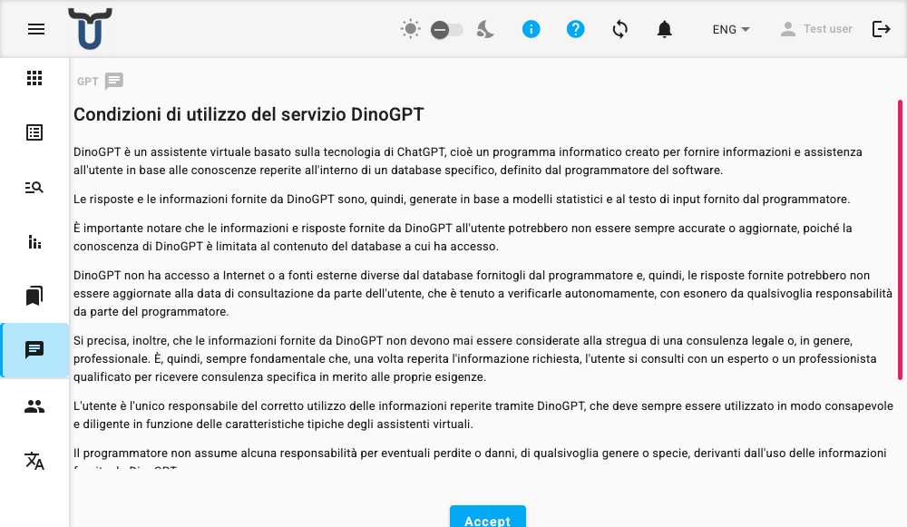

DinoGPT
DinoGPT est un assistant IA qui vous permet de poser des questions en langage naturel et de recevoir des réponses tirées d'une base de connaissances configurée. Il est conçu pour une conversation directe — vous tapez une question et recevez une réponse, accompagnée de références aux documents sources sur lesquels la réponse est basée.

Fonctionnalité optionnelle
Cette fonctionnalité nécessite une clé API DINO-AI et peut ne pas être disponible dans votre installation. Si vous ne voyez pas cette option, contactez votre administrateur.
Accepter les conditions d'utilisation
La première fois que vous ouvrez DinoGPT, une déclaration des conditions d'utilisation vous sera présentée, expliquant le fonctionnement de l'assistant, ce qu'il peut et ne peut pas faire, ainsi que vos responsabilités en tant qu'utilisateur. Lisez les conditions et cliquez sur Accepter pour continuer.
Votre acceptation est enregistrée sur votre appareil, vous ne serez donc pas redemandé lors de vos prochaines visites.
Saisir votre clé API
Après avoir accepté les conditions, il vous sera demandé de saisir votre clé API DINO-AI.
- Tapez votre clé API dans le champ.
- Appuyez sur Entrée ou cliquez sur le bouton fléché pour la soumettre.
Le système vérifiera la clé. Si elle est valide, un message de confirmation apparaîtra et l'interface de chat se chargera. Votre clé est enregistrée sur votre appareil, vous n'aurez donc pas besoin de la ressaisir la prochaine fois.
Clé API invalide
Si la clé est rejetée, vérifiez que vous l'avez saisie correctement. Un message d'erreur apparaîtra sous le champ si la clé n'est pas reconnue.
Service indisponible
Si le message "DINO-AI ne répond pas pour le moment" apparaît, le service est peut-être temporairement indisponible. Réessayez plus tard.
Poser des questions
Une fois le chat prêt, l'assistant vous saluera et un champ de saisie de texte apparaîtra en bas de l'écran.
- Sélectionnez un Espace de noms dans le menu déroulant pour choisir la base de connaissances à partir de laquelle l'assistant doit tirer ses réponses.
- Cliquez dans le champ de texte et tapez votre question.
- Appuyez sur Entrée pour l'envoyer.
- L'assistant traitera votre question et affichera la réponse dans l'historique du chat ci-dessus.
Vous pouvez poursuivre la conversation en posant des questions complémentaires. L'assistant prend en compte l'intégralité de l'historique de la conversation pour générer chaque réponse.
Comprendre les réponses
Chaque réponse de l'assistant peut inclure :
- Texte de la réponse — la réponse de l'assistant à votre question.
- Sources — des puces cliquables indiquant le document ou le fichier dont la réponse est tirée, ainsi que le numéro de page si disponible. Cliquez sur une puce source pour lire le passage pertinent.
- Questions suggérées — des puces cliquables avec des questions complémentaires suggérées par l'assistant. Cliquez sur l'une d'elles pour l'envoyer directement.
Donner votre avis
Les réponses incluent un bouton pouce levé et un bouton pouce baissé. Utilisez-les pour évaluer la qualité de la réponse. Un message de confirmation apparaîtra lorsque votre avis sera envoyé.
Dépannage
La conversation a atteint sa longueur maximale
Warning
Si l'assistant répond que la conversation a atteint sa longueur maximale, rechargez la page pour démarrer une nouvelle conversation.
"Désolé, vous n'avez pas assez de crédits !"
Warning
Votre compte ne dispose plus de crédits DINO-AI. Un lien peut apparaître pour acheter des crédits supplémentaires. Si vous avez besoin d'aide, contactez votre administrateur.